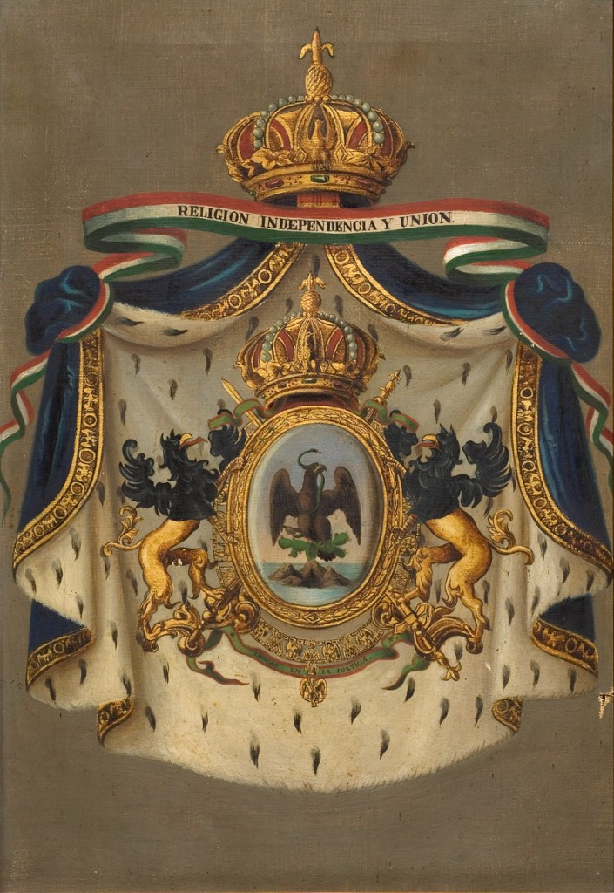

En esta sección se explora una linea de tiempo alternativa a la que conocemos, en la cual la pregunta es ¿Que hubiera pasado si el segundo imperio mexicano no hubiera caido? Sin embargo hay que saber los antecedentes historicas para conocer el trajecto alternativo que tomara México en esta Ucronia, haci como lo que sucede en el mundo.
